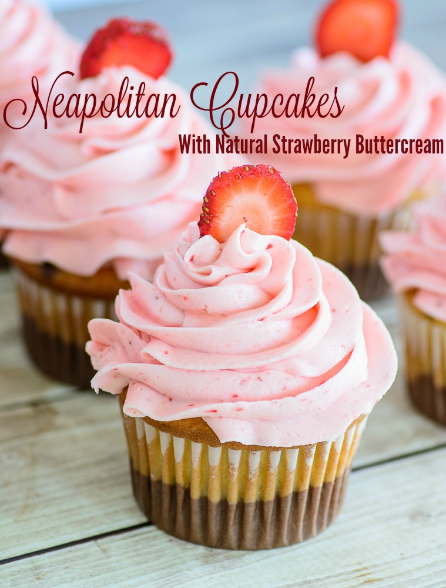
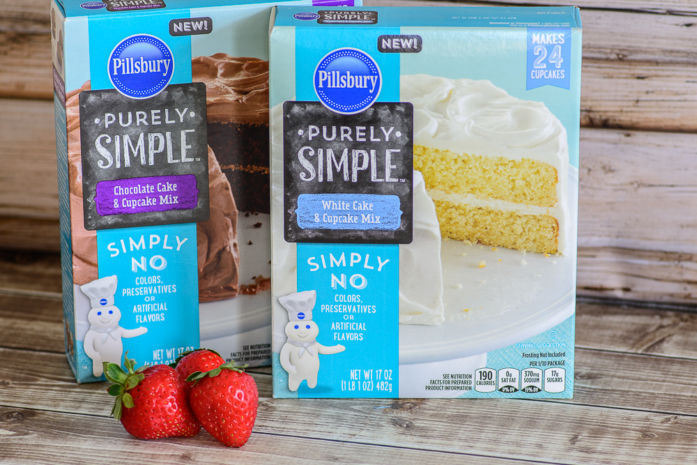

Neapolitan Cupcakes with Natural Strawberry Buttercream
A Sweet Treat and Fun To Make
Who else loves Neapolitan? The delicious combination of vanilla, chocolate and strawberry takes me back to my childhood where every party served that incredible concoction with a big slice of birthday cake. It was heaven for me. A few weeks ago I was feeling particularly nostalgic and decided to whip up a Neapolitan treat for my kids dessert. Instead of taking the traditional route of Neapolitan ice cream, I decided to take it to the next level and create a delicious cupcake inspired by my favorite ice cream flavor. That’s how the super yummy Neapolitan cupcake was born.
View Recipe Now »

The key ingredient in these cupcakes is Pillsbury Purely Simple cake mixes. This new product is free of colors, preservatives and artificial flavors but still has a great homemade taste.

Combine that with my homemade all natural strawberry buttercream frosting and I now have a great dessert option that doesn’t rack me with mom guilt.
Ingredients
Instructions
For the cupcakes:
- Prepare chocolate and white cake mix as directed on the box.
- Line a muffin pan with liners
- Scoop 1-2 tablespoons of chocolate cake batter into the cupcake liners
- Top with 1-2 tablespoons of white cake mix, being careful not to over fill
- Bake according to package directions.
- Let cool at least 20 minutes before frosting
Prepare the frosting:
- Place strawberries in a blender; puree until smooth.
- Transfer strawberry puree to a saucepan over medium heat; bring to a boil, stirring often, until puree is reduced by at least half, about 20 minutes. Remove from heat and cool completely.
- Beat butter with an electric mixer in a bowl until light and fluffy.
- Beat 1 cup confectioners' sugar into butter until just blended.
- Beat 2 tablespoons strawberry puree and vanilla extract into butter mixture until just blended.
- Repeat with 1 cup confectioners' sugar, followed by 2 tablespoons strawberry puree two more times.
- Beat last 1/2 cup confectioners' sugar into mixture until just blended.
{kind=link}
{kind=link}
{kind=link}
{kind=link}
{kind=link}
{kind=link}